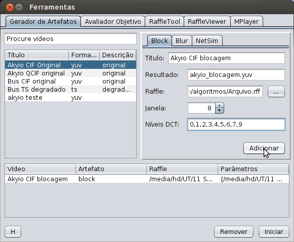

Nesta seção será apresentado o passo a passo para gerar um vídeo degradado com o artefato de blocagem.
Primeiramente, selecione um dos vídeos da tabela de vídeos. Se necessário, utilize a busca para realizar uma pesquisa:

Após selecionar o vídeo, informe os parâmetros indicados pelos campos:
- Título: o título do novo vídeo;
- Resultado: nome do arquivo de vídeo (será salvo no diretório padrão, definido em Configurações);
- Raffle: arquivo de degradação (ver RaffleTool);
- Janela: tamanho da janela deslizante utilizada na Transformada Discreta de Cossenos (DCT);
- Níves DCT: estes níveis deverão ser zerados pela aplicação da transformada. Sendo w o tamanho da janela escolhida, o maior nível possível é dado por (2*n - 1). Os níveis devem ser informados separados por vírgula, conforme a imagem a seguir:

Clique agora em 'Adicionar' para acumular a tarefa na fila de tarefas. Ela será executada somente ao se clicar em 'Iniciar'. Desta forma, é possível configurar várias tarefas e executá-las todas ao mesmo tempo.
Após a confirmação (ver figura acima), o novo vídeo deve aparecer na tabela de vídeos. Para visualizar o novo vídeo, acesse a aba MPlayer.